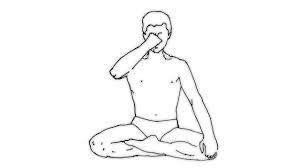

प्राणायाम > कपालभाति प्राणायाम :

-
कपालभाति प्राणायाम एक प्रमुख श्वास तकनीक है जो मानसिक शुद्धता, शारीरिक ताजगी, और श्वसन प्रणाली
को सुधारने के लिए प्रसिद्ध है।
कपालभाति प्राणायाम करने की विधि :
- आरंभिक स्थिति: सुखासन या पद्मासन में बैठें और रीढ़ को सीधा रखें।
- गहरी सांस लेना: धीरे-धीरे नाक से गहरी सांस लें और पेट को बाहर की ओर फैलाएं।
- सांस छोड़ना: तेजी से नाक से सांस छोड़ें और पेट को अंदर की ओर संकुचित करें।
- ध्यान केंद्रित करना: इस प्रक्रिया को 20-30 बार दोहराएं और ध्यान केंद्रित करें।
- आराम की स्थिति: प्रक्रिया समाप्त होने पर कुछ समय तक आराम करें और गहरी सांस लें।
लाभ :
- कपालभाति प्राणायाम श्वसन प्रणाली को सुधारता है और मन को शांत करता है।
- यह शरीर के विषाक्त पदार्थों को निकालने में सहायक है और ऊर्जा स्तर को बढ़ाता है।
Move to top